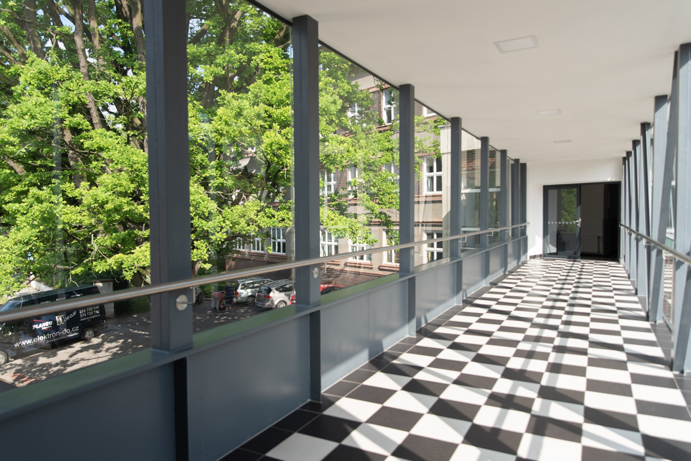

Přijďte s námi objevovat tajemství vesmíru a staňte se členy nového astronomického kroužku Keplerovi pátečníci!
Kroužek je určen zejména pro studenty středních škol, ale vřele vítáme i zájemce z nižších ročníků (případně z širší veřejnosti), kteří se zajímají o astronomii a nebojí se občas něco spočítat. Obsahem kroužku budou vybraná témata z astronomie a fyziky, která se objevují v předmětových olympiádách, například Astronomická olympiáda. Bude kladen důraz na osvojování si nových znalostí počítáním problémových úloh. Znalost matematiky na úrovni základní školy je nezbytná, na úrovni střední školy je výhodou.
Budeme se scházet osobně i v online prostoru:
Osobní setkání se budou konat na Gymnáziu Jindřicha Šimona Baara v Domažlicích a to v učebně fyziky.
Adresa: Gymnázium J. Š. Baara, Pivovarská 323, 344 01 Domažlice
Pro zájemce, kteří se nemohou účastnit osobně, bude kroužek streamován přes Jitsi Meet. Není potřeba dopředu nic instalovat, odkaz bude včas umístěn zde.
Odkaz na přednášku 13.10. je zde, začínáme v 16:00.
Setkání jsou nyní naplánovaná na následující pátky v čase 16:00 - max 17:30:
Vedoucí kroužku:
Pavel Kůs, doktorand na Fyzikálním ústavu AV ČR a spoluorganizátor Astronomické olympiády
E-mail:
keplerovipatecnici@gmail.com